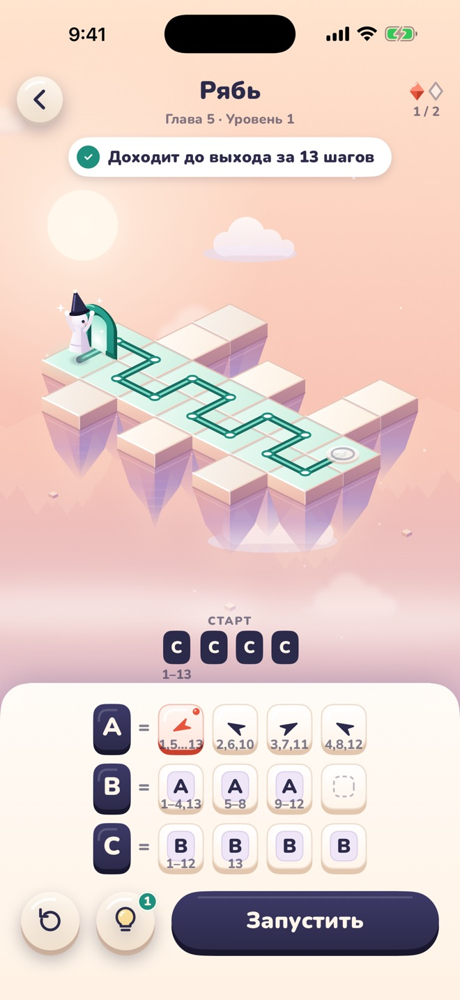
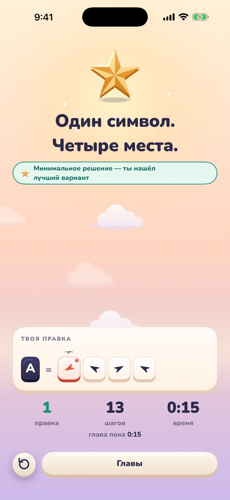
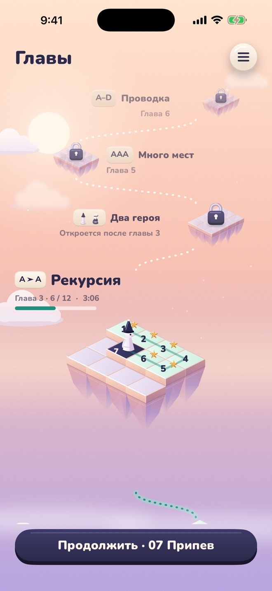
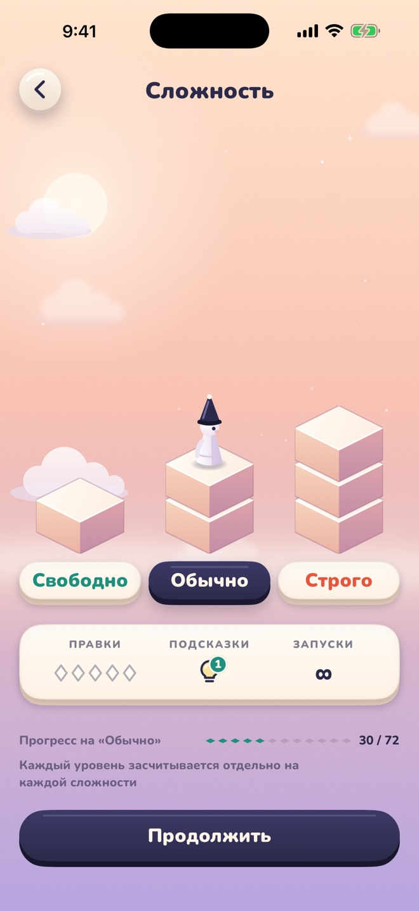

- Шаг 1
Уровень — это правила, не карта
Старт и несколько правил вроде A = вверх, вверх, B. Героя не ведёшь — он идёт сам.
- Шаг 2
Нажми «Запустить»
Правила развернутся в ходы. Герой дойдёт до выхода, упрётся в стену или зациклится — под каждым символом видно, какие шаги он дал.

- Шаг 3
Один символ — много мест
Изменишь символ — он изменится везде, где стоит правило. Реши уровень минимумом правок — получишь звезду.

- Шаг 4
Шесть глав
Одно правило. Правило в правиле. Рекурсия. Два героя. Много мест. Проводка. Глава открывается, когда решена предыдущая.

- Шаг 5
Три сложности
Свободно, Обычно, Строго. У каждой свои 72 уровня — всего 216.

A=
B
Логическая головоломка для iPhone
Thue
Правишь правила, а не героя.

- 6 глав
- 216 уровней
- Бесплатно
- Без сети
Коротко о главном
Сколько стоит?
Thue бесплатна. После каждого решённого уровня показывается реклама. Одна покупка — «Убрать рекламу» — отключает её навсегда.
Нужен интернет или аккаунт?
Нет. Аккаунта нет, прогресс хранится на устройстве, играть можно без сети.
Нужно уметь программировать?
Нет. «Как играть» — три карточки, первая глава учит на одном правиле.
Почему «Thue»?
В честь Акселя Туэ, норвежского математика, который изучал переписывание строк: заменить букву строкой — и так снова и снова. Это и есть вся игра.